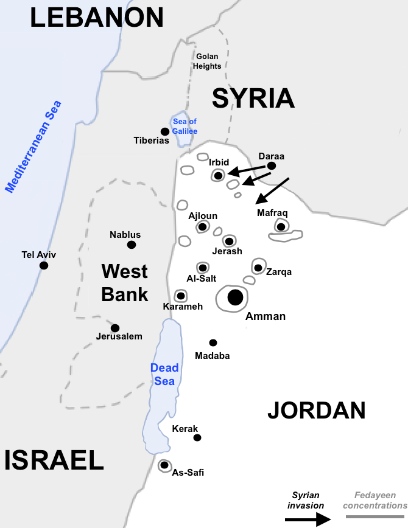
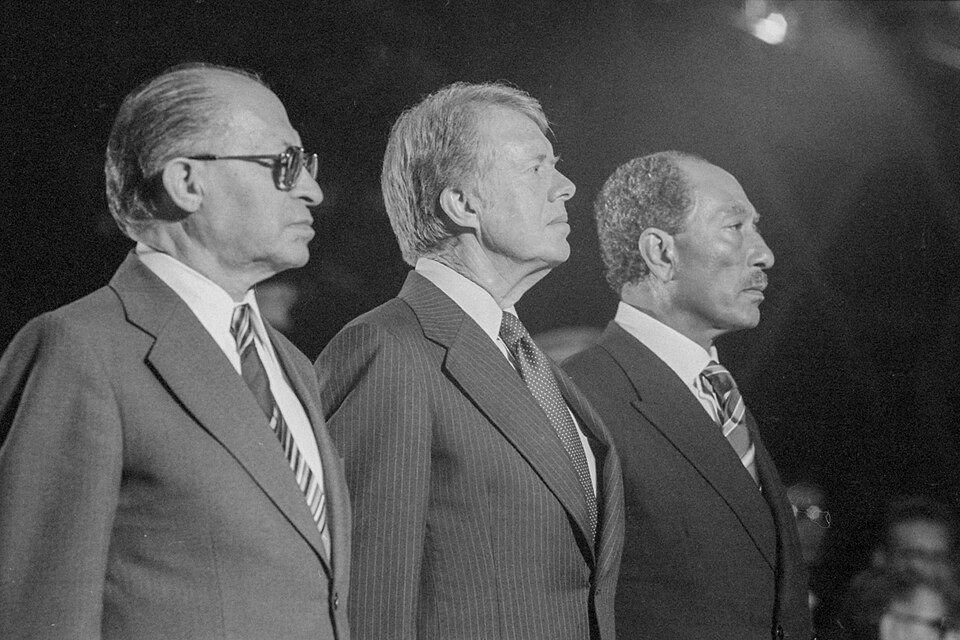
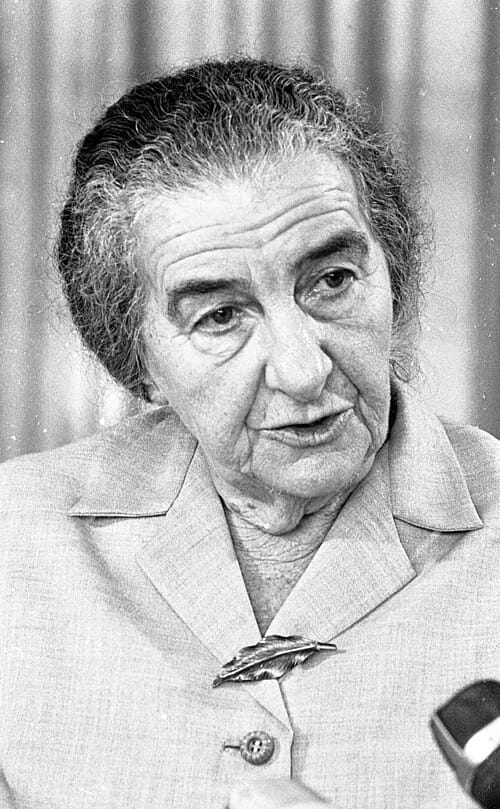

Edexcel GCSE (9–1) History • Option 26/27
Conflict in the Middle East
1945–1995
Key Topic 2: The escalating conflict, 1964–73

David Ben-Gurion reads the Declaration of Independence beneath the portrait of Theodor Herzl (Tel Aviv, 14 May 1948).
Official Course Textbook
Enquiry: “Why has peace proved so elusive in the Middle East?”
Contents
|
Lesson 1: KT 2.1: The Six Day War, June 1967
|
Page 2
|
|
Lesson 2: KT 2.2: The Aftermath of the 1967 War & The Rise of Palestinian Resistance
|
Page 11
|
|
Lesson 3: KT 2.3: Israel and Egypt: The War of Attrition and the Yom Kippur War, 1967–1973
|
Page 20
|
L1: KT 2.1: The Six Day War, June 1967[[SRC_MARKER:L4_Start]]
Learning Objectives
Understand the significance of the Cairo Conference (1964) and the growth of Fatah and the PLO.
Analyze the escalating tension between Israel, Syria and Jordan: Syria’s support for Fatah, Israel’s raid on Samu and the events of 7 April 1967.
Evaluate the actions of the USSR, Nasser and the USA in the period leading to war, and the key events of the war.
In June 1967, tensions reached a boiling point. Arab armies massed on Israel's borders, and fiery rhetoric promised Israel's destruction. But in a stunning, pre-emptive strike, Israel destroyed the entire Egyptian air force on the ground. In just six days, the geopolitical landscape of the region was completely transformed.
Did you know?
- Pre-emptive Strike: Israel launched Operation Focus, destroying over 300 Egyptian aircraft in a few hours.
- Golan Heights: Israel captured this strategic high ground from Syria, heavily fortifying its northern border.
- Sinai Peninsula: Israel conquered the vast Sinai desert, creating a huge buffer zone between themselves and Egypt.
Source A: Israeli Paratroopers at the Western Wall (7 June 1967)
David Rubinger Archival Photograph: Israeli paratroopers Zion Karasenti, Yitzhak Yifat, and Haim Oshri standing before the Western Wall in the Old City of Jerusalem shortly after capturing East Jerusalem from Jordanian forces.
Q1. Source Detective: What does this iconic photograph reveal about the emotional and religious significance of capturing East Jerusalem for Israeli soldiers, and how did this victory transform Jerusalem into a central focus of the ongoing conflict?
Recall & Retrieval (Key Topic 1: Birth of Israel & Suez)
1. Who became President of Egypt in 1954 and emerged as the champion of Pan-Arab nationalism?
2. What vital waterway did Nasser nationalise on 26 July 1956, triggering an international invasion?
3. Which three nations secretly colluded at Sèvres in October 1956 to attack Egypt?
4. Why was Britain and France forced to halt their military operation in Egypt in November 1956?
5. What international peacekeeping body was stationed in Sinai and Sharm el-Sheikh following the 1956 war?
6. What was the political union formed between Egypt and Syria in 1958 called?
7. What Palestinian organisation was officially created at the Cairo Conference in 1964?
8. What narrow maritime strait controls Israel’s maritime access from Eilat to the Red Sea?
9. What freshwater dispute escalated border clashes between Israel and Syria in the mid-1960s?
10. Which global superpower became the primary military supplier and patron of Egypt and Syria by the 1960s?
Vocabulary Check
Fill in the blanks using the vocabulary words below.
PLO (Palestine Liberation Organisation) | Fatah | Pre-emptive Strike | Casus Belli
In the 1960s, Palestinian nationalism grew stronger with the creation of the , an umbrella organization, and its dominant guerrilla faction, . Border tensions flared violently when Israel launched the into the West Bank in 1966. These escalating events eventually culminated in June 1967 when Israel launched , a devastating pre-emptive air strike that wiped out the Arab air forces on the ground.
[[SRC_MARKER:L4_Source_2]]
Source B: The Six-Day War Map (June 1967)

Map detailing the massive territorial gains made by Israel during the Six-Day War.
The Road to War (1964–1967): Palestinian Nationalism & Border Skirmishes:
SPECIFICATION STUDY MAP: KEY TOPIC 2.1
- Palestinian Nationalism → Cairo Conference (1964), creation of the PLO and Fatah.
- Border Wars & Skirmishes → Disputes over Jordan water, Samu Raid (1966), 7 April 1967.
- The Slide to War (May '67) → Soviet misinformation, UNEF withdrawal, closure of Tiran.
- The Six Day War → June 5 pre-emptive strike, lightning land war, redrawn boundaries.
The Cairo Conference (1964): The Formation of the PLO: The decade of relative border peace secured by the UN Emergency Force (UNEF) buffer began to disintegrate in the mid-1960s as a new wave of radical Palestinian nationalism swept the region. In January 1964, President Nasser hosted the historic Cairo Conference of the Arab League. At this summit, Arab leaders took the monumental step of establishing the Palestine Liberation Organisation (PLO). The primary objective of the PLO was to unite various Palestinian resistance groups under a single political umbrella to destroy the State of Israel and reclaim the lost homeland for the Palestinian refugees.
[[SRC_MARKER:L4_Task_1_0]]Q2. What was the primary objective of the Palestine Liberation Organisation (PLO) when it was established at the 1964 Cairo Conference?
The Water War: Diverting the Headwaters of the River Jordan: 
Fatah and Asymmetrical Warfare: Yasser Arafat’s Guerrilla Strategy: Alongside this diplomatic development, a radical guerrilla movement called Fatah (founded in 1959 by Yasser Arafat) began to dominate Palestinian military activity. Unlike older Arab politicians who relied on conventional state-to-state warfare, Fatah believed that only a grassroots, irregular guerrilla war could liberate Palestine. At the Cairo Conference, tensions also flared over a vital shared resource: water. Israel had completed its massive National Water Carrier engineering project to divert fresh water from the Sea of Galilee south to irrigate the Negev Desert. Viewing this as an act of aggression, Arab leaders at the conference agreed to divert the headwaters of the River Jordan (specifically the Dan and Banias rivers) inside Syria and Lebanon to starve Israel of water.
[[SRC_MARKER:L4_Task_3_0]]Q3. How did the dispute over the River Jordan escalate tensions between Israel and the Arab states in the mid-1960s?
The Syrian Border Crisis: The 1966 Ba'athist Military Coup: By 1965, this dispute erupted into an active border war. Whenever Syrian workers began building diversion canals, Israeli tanks and artillery fired across the border to destroy their heavy machinery, driving Syria and Israel into a cycle of violent border clashes. By 1966, the border between Israel and its Arab neighbours had become a volatile combat zone. This escalation was fueled primarily by a radical, left-wing military coup in Syria in February 1966.
Syrian State Sponsorship: Fueling Cross-Border Sabotage Raids: The new Syrian government adopted a fiercely aggressive posture toward Israel. They began actively sponsoring Fatah, providing Palestinian guerrilla fighters with funds, modern explosives, and training bases inside Syrian territory. From these bases, Fatah launched a relentless campaign of cross-border sabotage raids into Israel. Rather than attacking the Syrian military directly, Israel's retaliatory strikes focused on the countries from which Fatah fighters infiltrated, pushing relations to the breaking point:
[[SRC_MARKER:L4_Task_5_0]]Q4. How did the new Syrian government support the Fatah guerrilla movement from 1966 onwards?
[[SRC_MARKER:L4_Source_8]]
Source C: Israeli Paratroopers at the Western Wall (June 1967)
Israeli paratroopers standing in awe before the Western Wall in Jerusalem.
Q5 Source Detective: Why did capturing the Old City of Jerusalem carry such immense religious and political significance for Israel?
Border Escalation: The Samu Raid (1966) & Aerial Clash over Damascus (1967): After a Fatah landmine killed three Israeli border policemen, Prime Minister Levi Eshkol ordered a massive reprisal raid into Jordan, which controlled the West Bank. On 13 November 1966, 600 IDF troops backed by tanks swept into the Jordanian village of Samu, dynamiting dozens of homes and clashing with the Jordanian military, leaving 15 Jordanian soldiers dead. The raid deeply embarrassed King Hussein of Jordan, who publicly accused President Nasser of hiding behind UN peacekeepers instead of helping defend his Arab allies. The Air Clash of 7 April 1967: Skirmishes on the Syrian border erupted into full-scale combat when Syrian artillery on the Golan Heights began bombarding Israeli tractors farming in the demilitarised zone. The Israeli air force responded aggressively. In a dramatic aerial dogfight over Damascus, Israeli fighter jets shot down six Syrian Soviet-built MiG-21 jets in a single afternoon. This humiliating defeat left the Syrian leadership desperate to find a way to restore their military honor.
[[SRC_MARKER:L4_Task_6_0]]Q6. What was the outcome of the April 1967 air clash over Damascus, and how did it affect the Syrian leadership?
The May 1967 Cascade: Chronology of Diplomatic Crisis:
THE MAY 1967 CASCADE: CHRONOLOGY OF CRISIS
- 13 May → Soviet Misinformation: USSR falsely tells Nasser Israel is massing troops on Syria.
- 15 May → Egyptian Mobilization: Nasser puts army on alert, moves troops into Sinai.
- 16 May → UN Out: Nasser orders UN peacekeepers (UNEF) to evacuate the border buffer.
- 23 May → Maritime Blockade: Egypt closes the Straits of Tiran, choking Israel's port of Eilat.
- 30 May → Encirclement: King Hussein of Jordan signs a joint defence pact with Egypt.
Soviet Disinformation (13 May 1967): The Spark of Crisis: The humiliation of the April air clash set off a rapid chain reaction in May 1967 that made a major regional war virtually inevitable. The Catalyst: Soviet Misinformation (13 May). The Soviet Union intervened by issuing a formal, highly urgent warning to President Nasser, claiming that Israel was massing ten brigades on the Syrian border for a full-scale invasion. This report was completely false—UN observers on the ground confirmed there was no Israeli troop build-up—but it placed Nasser under immense pressure to act.
[[SRC_MARKER:L4_Task_8_0]]Q7. How did the Soviet Union's misinformation in May 1967 act as a catalyst for the crisis?
Nasser’s High-Stakes Brinkmanship: Expelling the UNEF and Closing Tiran (May 1967): Accused of cowardice by Jordan and Syria, Nasser decided he had to demonstrate his leadership of the Arab world. On 15 May, he placed the Egyptian army on high alert and marched his troops across the Suez Canal into the Sinai Desert. On 16 May, he ordered the UNEF commander to immediately withdraw all UN peacekeepers from the Sinai border, leaving the Egyptian and Israeli armies standing face-to-face. Closing the Straits of Tiran (23 May): In his most dangerous move, Nasser ordered Egyptian troops to reoccupy Sharm el-Sheikh and closed the Straits of Tiran to all Israeli shipping. Israel had repeatedly declared that closing the Straits would be considered a formal casus belli (an act of war), as it choked off its oil imports and trade through Eilat.
[[SRC_MARKER:L4_Task_9_0]]Q8. Identify two dangerous gambles President Nasser took between 15 May and 23 May 1967.
The Arab Encirclement: The Jordan-Egypt Mutual Defence Pact (30 May 1967): To Israel’s horror, King Hussein of Jordan flew to Cairo and signed a mutual defence treaty with Nasser, placing the Jordanian army under the command of an Egyptian general. Israel now faced a fully coordinated military encirclement on three fronts by armies openly calling for its destruction. Believing an Arab invasion was imminent, the newly formed Israeli National Unity Government—including war hero Moshe Dayan as Defense Minister—decided to launch a pre-emptive strike to secure its survival.
Operation Focus (5 June 1967): The Decisive Pre-Emptive Air Strike: On the morning of 5 June 1967, Israel launched Operation Focus, the most successful pre-emptive air strike in modern military history. At 7:45 AM, nearly the entire Israeli air force flew low over the Mediterranean Sea to evade Egyptian radar, catching the Egyptian air force completely by surprise as they ate breakfast. Within three hours, Israeli jets bombed the runways and destroyed 309 of Egypt's 340 combat aircraft while they were still parked on the tarmac.
[[SRC_MARKER:L4_Task_11_0]]Q9. Describe the success of Operation Focus launched by the Israeli air force on 5 June 1967.
Absolute Air Supremacy: Neutralising Syrian and Jordanian Airfields: Later that day, when Syria, Jordan, and Iraq entered the war, Israel turned its jets on their airfields, destroying their air forces as well. By the end of day one, Israel had secured absolute air superiority, guaranteeing its ground forces total protection and leaving Arab infantry completely exposed to aerial attack.
[[SRC_MARKER:L4_Source_15]]
Source D: Operation Focus (5 June 1967)

Israeli aircraft dominating the skies after destroying the Egyptian Air Force on the ground.
Tactical Execution: The Air Superiority Infographic: 
The Southern Front: Israeli Armoured Columns Sweep the Sinai: With the skies secured, the IDF launched a highly coordinated, three-front blitzkrieg that redrew the map of the Middle East in just six days. The Southern Front (Egypt): Israeli tank divisions led by General Ariel Sharon and General Israel Tal raced across the Sinai Desert, routing the Egyptian forces and advancing all the way to the east bank of the Suez Canal, capturing the entire Sinai Peninsula and the Gaza Strip.
[[SRC_MARKER:L4_Task_14_0]]Q10. What were the key territorial conquests of the Israeli Defence Forces during the land war?
The Eastern and Northern Fronts: Capturing East Jerusalem and the Golan: The Eastern Front (Jordan): After Jordan began shelling West Jerusalem, Israeli forces launched a fierce counter-offensive. They captured the entire West Bank and, in a deeply emotional victory, took control of the Old City of East Jerusalem, reuniting the city under Jewish control for the first time in 2,000 years. The Northern Front (Syria): On 9 June, Israeli forces turned north and scaled the steep cliffs of the Golan Heights under heavy Syrian fire, capturing the strategic plateau and putting the Syrian capital of Damascus within range of Israeli artillery.
The Six-Day Ceasefire: Tripled Territory and a Shattered Balance of Power: By the time a United Nations ceasefire took effect on 10 June 1967, the war was over. Israel had achieved a miraculous victory, defeating three major Arab armies and expanding its territory to three times its pre-war size.
The Territorial Balance Sheet: Strategic Depth vs Demographic Dilemma:
| Captured Territory |
Captured From |
Strategic Value |
| Sinai Peninsula |
Egypt |
Vast desert buffer zone |
| Gaza Strip |
Egypt |
Eliminated Fedayeen bases |
| West Bank |
Jordan |
Defensible borders (Jordan) |
| East Jerusalem |
Jordan |
Holy Sites (Western Wall) |
| Golan Heights |
Syria |
Protected Galilee farming |
[[SRC_MARKER:L4_Task_17_0]]Q11. Summarise the key steps taken by Egypt in May 1967 that convinced Israel that war was imminent.
Pair & Share Activity
Q12. Was Israel justified in launching Operation Focus on 5 June 1967? Explain one reason supporting Israel's decision, and one reason criticising it.
🚪 Exit Ticket: Split-Perspective Front Page
Exit Ticket · Split-Perspective Headlines
Write two punchy, 6-word newspaper headlines capturing the historic shock of the Six-Day War (10 June 1967):
• Headline A (Israeli Perspective - The Jerusalem Post): Summarize the capture of the Old City and new defensive depth.
• Headline B (Arab Perspective - Al-Ahram, Cairo): Summarize the shock of the "Naksa" (Setback) and loss of Sinai and Jerusalem.
Teacher Guidance: Strict constraint: Exactly 6 words per headline! Ensure each captures the emotional and geopolitical reality of each side.
L2: KT 2.2: The Aftermath of the 1967 War & The Rise of Palestinian Resistance[[SRC_MARKER:L5_Start]]
Learning Objectives
Understand UN Resolution 242 and the continued dispute over the Suez Canal.
Analyze the situation of Palestinian refugees and the significance of the occupied territories: Golan Heights, Gaza Strip, West Bank, Sinai and East Jerusalem.
Evaluate the use of terrorism, Israel’s response and international attitudes towards the Palestine issue: the PFLP airplane hijacks of 1970; Black September and the Munich Olympics; and the expulsion of the PLO from Jordan (1970).
The Six Day War left Israel holding territories completely inhabited by Palestinians: the West Bank, Gaza Strip, and East Jerusalem. While Israelis celebrated the reunification of Jerusalem, the UN passed Resolution 242 demanding they withdraw. The ongoing occupation of these lands remains the core of the conflict today.
Did you know?
- Resolution 242: The famous UN resolution stating 'land for peace', demanding Israeli withdrawal from occupied territories.
- The PLO: Following the Arab defeat, the Palestinian Liberation Organisation emerged as an independent military force.
- East Jerusalem: Israel unilaterally annexed the eastern half of the holy city, a move not recognised internationally.
Source A: Black September Militant at the Munich Olympics (5 September 1972)
Associated Press Photograph: A masked Black September terrorist stands on the balcony of Connollystraße 31 in the Munich Olympic Village, holding 11 Israeli athletes hostage during the 1972 Summer Games.
Q1. Source Detective: Why did radical Palestinian militant groups shift toward dramatic international terrorism like the Munich Olympics hostage crisis after the total defeat of conventional Arab armies in the 1967 Six-Day War?
Recall & Retrieval (Lesson 5: The Six Day War)
1. What was the codename of the surprise Israeli air strike that launched the Six Day War on 5 June 1967?
2. Approximately how many Egyptian combat aircraft were destroyed on the ground within the first three hours?
3. Which four major territories did Israel capture and occupy during the Six Day War?
4. From which country did Israel capture the West Bank and the Old City of Jerusalem in 1967?
5. From which country did Israel capture the Golan Heights in 1967?
6. From which country did Israel capture the Sinai Peninsula and Gaza Strip in 1967?
7. What landmark United Nations Security Council Resolution was passed in November 1967 establishing the "land for peace" formula?
8. What were the "Three No's" agreed by Arab leaders at the Khartoum Summit in August 1967?
9. Who was Israel’s Minister of Defense during the Six Day War who became an international icon of victory?
10. What Egyptian waterway was closed to international shipping from 1967 to 1975 due to sunken ships and Israeli occupation of its east bank?
Vocabulary Check
Write a historically accurate sentence connecting two terms from the glossary box below.
UN Resolution 242 | Khartoum Resolution | PFLP | Black September | Operation Wrath of God
Your Sentence:
[[SRC_MARKER:L5_Source_2]]
Source B: Black September Militant on the Balcony (September 1972)

A masked member of the Palestinian group Black September on the balcony of the Israeli team quarters at the Munich Olympic Village.
Q2 Source Detective: How did the live global media coverage of the Munich hostage crisis change international awareness of the Palestinian cause?
The Diplomatic Stalemate: UN Resolution 242 and 'Land for Peace' (November 1967): The lightning ending of the Six Day War left the Middle East in a deep diplomatic deadlock. On 22 November 1967, the United Nations Security Council unanimously adopted Resolution 242. This resolution was designed to establish the guiding principles for a "just and lasting peace" in the region, introducing the fundamental "land for peace" formula. Resolution 242 stressed the "inadmissibility of the acquisition of territory by war" and called for: 1. The withdrawal of Israeli armed forces from territories occupied in the conflict. 2. The termination of all states of belligerency, and respect for the right of every state in the area to live in peace within secure and recognized borders. 3. A just settlement of the refugee problem.
The Diplomatic Formula: Graphic Analysis of Resolution 242: 
Linguistic Loopholes: 'Territories' vs 'The Territories' & The PLO Rejection: However, the resolution's deliberate ambiguity created long-term loopholes that both sides exploited. The English text called for withdrawal from "territories occupied," omitting the definite article 'the'. Israel’s government argued this meant they were not required to withdraw from all the occupied land, but rather from some territories, to ensure "secure and recognized" borders. Conversely, the equally official French version translated the phrase as "des territoires occupés" (from the territories), which the Arab states interpreted as a mandate for a complete Israeli return to the pre-war boundaries. The PLO immediately rejected Resolution 242 because it referred to the Palestinians merely as a "refugee problem" rather than as a nation with a legitimate right to self-determination and statehood.
[[SRC_MARKER:L5_Task_2_0]]Q3. How did Israel and the Arab states interpret the ambiguous wording of UN Resolution 242 differently?
The Arab Response: The Khartoum Summit and the 'Three Noes' (August 1967): The Arab states responded defiantly at the Arab League Summit in Khartoum in August 1967. They issued the famous "Three Nos" of Khartoum: No peace with Israel, No recognition of Israel, and No negotiations with Israel. This diplomatic deadlock meant the Suez Canal—which Egypt had blocked at the start of the war—remained closed. The canal became a heavily fortified military front line separating the Egyptian army on the west bank from the IDF on the east bank, leading directly to the War of Attrition (1969–1970).
[[SRC_MARKER:L5_Task_3_0]]Q4. What was the defiant response of the Arab states at the August 1967 Arab League Summit in Khartoum?
The Second Refugee Crisis: 300,000 Newly Displaced Palestinians: The Six Day War triggered a second massive wave of Palestinian displacement. Approximately 300,000 Palestinian Arabs fled the West Bank and Gaza Strip during the fighting, with many being forced to flee for a second time from existing refugee camps. The vast majority crossed the River Jordan, putting immense economic strain on Jordan. This left over 1.5 million Palestinians living under military occupation or in crowded, temporary UNRWA camps.
Strategic Buffer Zones: The Geography of Israeli Military Security: 
[[SRC_MARKER:L5_Source_8]]
Source C: UN Security Council Resolution 242 (November 1967)
UN Resolution 242, which established the 'Land for Peace' formula for resolving the Arab-Israeli conflict.
Strategic Buffers vs Annexation: The West Bank, Sinai, and Golan Heights: For Israel's security, the captured territories held immense strategic and military significance. The territories acted as vast physical buffers. The Sinai Desert kept Egyptian artillery far from Israel's borders, the West Bank created a defensible border along the River Jordan, and the Golan Heights prevented Syria from shelling Israeli farming villages in Galilee. The Golan Heights also provided vital water sources, while the Sinai Peninsula offered oil fields in the Gulf of Suez. Israel immediately annexed East Jerusalem, declaring the unified city its eternal capital.
[[SRC_MARKER:L5_Task_6_0]]Q5. Explain the strategic significance of the captured territories for Israel's military security.
The Settlement Policy: Colonisation and Demographic Control: However, the occupation quickly became a source of deep political and demographic division. In September 1967, Israel established its first Jewish settlement in Gush Etzion on the West Bank. Under both Labor and Likud governments, Israel promoted a policy of building Jewish settlements in the occupied territories, offering financial subsidies and tax breaks to settlers. By the late 1980s, the number of settlers rose to over 200,000, creating permanent "facts on the ground" that fragmented Palestinian society, restricted movement through military checkpoints, and deeply alienated the local Arab population.
[[SRC_MARKER:L5_Task_7_0]]Q6. How did the Israeli policy of building Jewish settlements in the occupied territories impact the local Arab population?
[[SRC_MARKER:L5_Source_10]]
Source D: Yasser Arafat Addresses the United Nations (13 November 1974)

PLO Chairman Yasser Arafat speaking to the UN General Assembly in New York, famously offering an olive branch alongside a freedom fighter’s gun.
Q7 Source Detective: What message was Yasser Arafat conveying to world leaders by offering an "olive branch" while warning them not to let it fall from his hand?
The Rise of Armed Resistance: Yasser Arafat, Fatah, and the PLO: The total military defeat of conventional Arab armies in 1967 convinced Palestinian nationalists that they could not rely on Arab states to liberate their homeland. Under Yasser Arafat's leadership, the PLO shifted toward guerrilla warfare and irregular tactics. Simultaneously, more radical, Marxist splinter groups emerged, most notably the Popular Front for the Liberation of Palestine (PFLP), founded by George Habash.
The Disillusionment with Arab Armies: The Shift to Independent Guerrilla Struggle: 
International Aviation Terrorism: The PFLP Dawson's Field Hijackings (1970): To force the Palestinian issue onto the international diplomatic stage, the PFLP pioneered international aviation terrorism. On 6 September 1970, PFLP militants hijacked four international commercial airliners bound for New York and forced three of them to land at Dawson's Field, a remote desert airstrip near Zarka in Jordan. After evacuating the passengers, the hijackers blew up the multi-million-dollar aircraft in front of the world's media. This dramatic event succeeded in grabbing global attention, but it also deeply embarrassed Jordan's King Hussein, whose sovereignty had been publicly undermined.
[[SRC_MARKER:L5_Task_10_0]]Q8. Why did the Popular Front for the Liberation of Palestine (PFLP) hijack commercial airliners to Dawson's Field in 1970?
[[SRC_MARKER:L5_Source_13]]
Source E: Map of Fedayeen Bases & Black September Conflict (1970)

Map showing Palestinian guerrilla (Fedayeen) strongholds around Amman, Zarqa, Irbid, and Karameh, alongside the Syrian armoured invasion routes repelled by the Jordanian Armed Forces during Black September.
Q9 Source Detective: Study the map. Why did the armed Fedayeen presence in Jordanian capital cities directly threaten the survival and sovereignty of King Hussein's Hashemite monarchy?
The Dual Authority Crisis: The PLO as a 'State-Within-a-State' in Jordan: By 1970, the PLO had established a virtual "state-within-a-state" inside Jordan, collecting its own taxes, running checkpoints, and launching unauthorized rocket attacks on Israel, which drew destructive Israeli military reprisals onto Jordanian territory. The Dawson's Field hijackings were the final straw for King Hussein. He realized that the PLO threatened to overthrow his Hashemite monarchy and plunge Jordan into a civil war.
[[SRC_MARKER:L5_Task_11_0]]Q10. Why did King Hussein of Jordan view the PLO as a threat to his sovereignty by 1970?
[[SRC_MARKER:L5_Source_14]]
Source F: Yasser Arafat and the PLO

Yasser Arafat, leader of the PLO, addressing the UN General Assembly with an olive branch and a gun.
The Black September Civil War: Sequence of the Jordan Showdown:
THE BLACK SEPTEMBER CIVIL WAR

Crushing the Resistance: King Hussein's Offensive in Amman (September 1970): On 17 September 1970, King Hussein declared martial law and ordered his elite, British-trained army to launch an all-out military offensive against PLO bases in Amman and northern Jordan. This brutal, ten-day civil war became known as "Black September". The Jordanian army used heavy artillery and tanks in crowded refugee camps, crushing the PLO forces.
[[SRC_MARKER:L5_Task_13_0]]Q11. What was the outcome of the 'Black September' civil war in Jordan in 1970?
Expulsion to Lebanon: The Creation of 'Fatahland' in Southern Lebanon: Defeated and politically isolated, Yasser Arafat and thousands of PLO fighters were forcibly expelled from Jordan. They relocated their central headquarters to Lebanon, establishing a new base of operations in southern Lebanon (known as "Fatahland") and Beirut, which destabilized Lebanon's delicate political balance. In the wake of their defeat in Jordan, a radical, highly secretive PLO splinter group calling itself "Black September" was formed to conduct covert operations against Israeli and Western targets. Their most notorious attack occurred during the Munich Olympic Games in September 1972.
[[SRC_MARKER:L5_Source_17]]
Source G: The Munich Hostage Crisis (September 1972)
Masked Black September terrorist on the Olympic Village balcony in Munich.
Q12 Source Detective: How did global television coverage of the Munich massacre impact international attitudes toward the Palestinian cause?
The Munich Olympics Massacre (September 1972): Global Hostage Tragedy: On 5 September 1972, eight heavily armed Black September terrorists scaled the fence of the Olympic Village in Munich, killing two members of the Israeli Olympic team and taking nine others hostage. The terrorists demanded the release of 234 Palestinian prisoners held in Israeli jails. During a botched rescue attempt by West German police at the Fürstenfeldbruck military airfield, the terrorists detonated a grenade inside a helicopter containing the bound hostages. In total, 11 Israeli athletes, five terrorists, and one German police officer were killed. The massacre unfolded on live television, shocking a global audience of hundreds of millions. It drew severe international condemnation of Palestinian terrorism, but it also succeeded in giving the Palestinian cause unprecedented public visibility.
[[SRC_MARKER:L5_Task_15_0]]Q13. Describe the events and consequences of the 1972 Munich Olympic Games terrorist attack.
Operation Wrath of God: Prime Minister Golda Meir’s Covert Retaliation: In response, Israeli Prime Minister Golda Meir ordered the IDF to launch heavy bombing raids against PLO camps in Lebanon and Syria. More significantly, she authorized the Mossad to launch "Operation Wrath of God"—a highly secretive, global assassination campaign that hunted down and killed the key planners of the Munich massacre across Europe and the Middle East.
[[SRC_MARKER:L5_Task_16_0]]Q14. Explain how the expulsion of the PLO from Jordan in 1970 led to the emergence of international terrorism like the 1972 Munich Olympics attack.
Pair & Share Activity
Q15. Explain two reasons why Israel's victory in 1967 created new obstacles to peace.
🚪 Exit Ticket: The 3-Minute Paper 2 Speed-Run
Exit Ticket · Paper 2 Micro-Drill
In Edexcel Paper 2, Question 1 is always a 4-mark question: "Explain one consequence of..." Spend 3 minutes writing a single PEEL paragraph for today’s topic:
• Question: Explain one consequence of the Battle of Karameh (1968) for the Palestinian resistance movement.
• Structure Requirement: State your Point (1 mark), provide specific historical Evidence [e.g. Fatah recruitment, Arafat prestige] (1 mark), and Explain the consequence (2 marks).
Teacher Guidance: Write with precision. Avoid generic fluff.
L3: KT 2.3: Israel and Egypt: The War of Attrition and the Yom Kippur War, 1967–1973[[SRC_MARKER:L6_Start]]
Learning Objectives
Analyze Egyptian relations with Israel, the USA, the USSR and other Arab states.
Understand Israel’s consolidation of control of the occupied territories.
Describe the key events of the Yom Kippur War (1973) and its aftermath.
Determined to avenge the humiliation of 1967 and regain the Sinai Peninsula, Egypt's Anwar Sadat launched a surprise attack on Israel during Yom Kippur, the holiest day in the Jewish calendar. The initial Arab success shattered Israel's feeling of invincibility and forced them back to the negotiating table.
Did you know?
- Yom Kippur: October 6, 1973, when Egyptian and Syrian forces launched their coordinated surprise attack.
- The Bar Lev Line: The supposedly impenetrable Israeli sand defenses along the Suez Canal, which Egypt breached in hours using water cannons.
- Oil Embargo: Arab oil-producing states stopped selling oil to countries supporting Israel, causing a global economic crisis.
Source A: Egyptian Troops Crossing the Suez Canal in Operation Badr (October 1973)
Egyptian infantry and military vehicles crossing the Suez Canal on pontoon bridges after breaching the sand ramparts of the Bar-Lev Line on 6 October 1973.
Q1. How did the Egyptian surprise assault on Yom Kippur completely undermine Israeli intelligence and defensive assumptions?
Recall & Retrieval (Lesson 6: Occupied Territories & Resistance)
1. What was the massive sand-wall fortification line built by Israel along the eastern bank of the Suez Canal after 1967 called?
2. Who became Chairman of the Palestine Liberation Organization (PLO) in 1969?
3. What country expelled the PLO in September 1970 after international airline hijackings?
4. What tragic terrorist attack carried out by Black September in 1972 resulted in the murder of 11 Israeli athletes?
5. What country became the new base of operations for the PLO after their expulsion from Jordan in 1970?
6. Who succeeded Gamal Abdel Nasser as President of Egypt following Nasser’s death in September 1970?
7. What was the undeclared artillery and air duel fought between Egypt and Israel along the Suez Canal from 1968 to 1970 called?
8. What formula was established by UN Resolution 242 demanding Israeli withdrawal in exchange for peace?
9. What did the Arab Khartoum Resolution mean by the "Three No’s"?
10. What strategic plateau did Israel capture from Syria in 1967 that protected northern Galilee?
Vocabulary Check
Write a clear definition and a historically accurate sentence for the term: War of Attrition
[[SRC_MARKER:L6_Source_2]]
Source B: The Yom Kippur War (October 1973)

Egyptian forces successfully crossing the Suez Canal during the surprise attack on Yom Kippur in 1973.
The War of Attrition (1969–1970): Nasser’s Artillery Duel on the Suez Canal: The immediate aftermath of the 1967 war did not bring peace, but rather a grueling, undeclared border war along the Suez Canal known as the War of Attrition (1969–1970). Egyptian President Gamal Abdel Nasser refused to accept the static Israeli occupation of the Sinai Peninsula. Backed by massive military aid from the Soviet Union, Nasser launched a continuous campaign of heavy artillery shelling, commando raids, and rocket barrages across the Suez Canal to wear down the Israeli Defence Forces (IDF) and make the occupation too costly to sustain.
Cold War Escalation: Superpower Involvement along the Canal:
Deep-Penetration Bombing & Soviet SAM-3 Air Defences: Israel responded aggressively by utilizing its absolute air superiority to conduct deep-penetration bombing raids into Egypt, targeting Egyptian military garrisons, industrial factories, and infrastructure along the Nile. To protect his regime, Nasser turned directly to his Soviet patrons. By 1970, approximately 15,000 Soviet military advisers were stationed in Egypt. Soviet pilots actively flew combat missions, engaging Israeli jets in dogfights over the canal, while Soviet engineers constructed advanced SAM-3 surface-to-air missile bases along the Suez front.
[[SRC_MARKER:L6_Task_2_0]]Q2. How did Israel respond to Nasser's artillery bombardments during the War of Attrition, and what was Nasser's reaction?
The Rogers Ceasefire & The Death of Gamal Abdel Nasser (September 1970): Alarmed that this direct superpower clash could drag the United States and the USSR into a global conflict, US Secretary of State William Rogers intervened. In August 1970, he successfully brokered a ceasefire that halted the active fighting. However, neither Egypt nor Israel was committed to substantive peace talks. Shortly after, on 28 September 1970, the strain of regional politics took its toll when Nasser suffered a sudden, fatal heart attack. His death shocked the Arab world. Five million mourners flooded the streets of Cairo for his funeral, marking the end of the charismatic era of Pan-Arabism.
Enter Anwar Sadat: Economic Crisis and the Urgency of Sinai: Nasser was succeeded by his relatively unknown and underestimated Vice President, Anwar Sadat. Sadat inherited a country on the brink of political and economic collapse. Egypt's economy was severely damaged by the continuous military mobilization, the Suez Canal was closed (depriving Egypt of vital transit toll revenues), and millions of displaced civilians had fled the devastated cities along the canal zone. Sadat realized that to rebuild Egypt’s economy and send home his one million mobilized soldiers, he desperately needed to secure the return of the Sinai Peninsula and reopen the Suez Canal.
[[SRC_MARKER:L6_Task_4_0]]Q3. Why did believe he desperately needed to secure the return of the Sinai Peninsula?
Sadat’s Dual Track Diplomacy: Graphic Analysis: 
The Rebuffed Diplomatic Overture: The 1971 'Peace for Sinai' Offer: Between 1970 and 1972, Sadat pursued two distinct diplomatic tracks: The "Peace for Sinai" Offer and Expelling the Soviet Advisers. Sadat approached Israeli Prime Minister Golda Meir with a bold proposal based on UN Resolution 242. He offered a formal peace agreement and the reopening of the Suez Canal in exchange for Israel returning the Sinai Peninsula. Confident in their military superiority, Golda Meir and her cabinet rejected the offer, refusing to return to the vulnerable pre-1967 borders.
[[SRC_MARKER:L6_Task_6_0]]Q4. What was the 'Peace for Sinai' offer proposed by Anwar Sadat, and why did Golda Meir reject it?
[[SRC_MARKER:L6_Source_9]]
Source C: Begin, Carter, and Sadat at the Camp David Accords (September 1978)

White House Official Photograph: Israeli Prime Minister Menachem Begin, US President Jimmy Carter, and Egyptian President Anwar Sadat at the Camp David summit in Maryland after 13 days of intensive secret negotiations.
Q5 Source Detective: What does this photograph reveal about the indispensable role of US presidential diplomacy in brokering peace between Israel and Egypt?
The Expulsion of Soviet Advisers (July 1972) & The Decision for War: Frustrated by Soviet reluctance to supply him with offensive weapons and hoping to win diplomatic favor with the United States, Sadat took the dramatic step of expelling 15,000 Soviet advisers from Egypt in July 1972. He calculated that this anti-communist move would prompt the US to pressure Israel into territorial concessions. However, the Nixon administration was preoccupied with the Vietnam War and met Sadat's gesture with total indifference. By late 1972, Sadat's popularity had plummeted to its lowest point. The Egyptian public mocked him, the economy was stagnant, and the Sinai remained firmly in Israeli hands. Sadat realized that Israel would never negotiate as long as it felt militarily secure. He concluded that Egypt's only option was to launch a limited, surprise military strike to shatter the myth of Israeli invincibility and force the global superpowers to intervene and broker a diplomatic solution.
[[SRC_MARKER:L6_Task_7_0]]Q6. Why did Sadat expel 15,000 Soviet advisers from Egypt in July 1972, and what was the US reaction?
Israeli Complacency: Consolidating the Occupied Territories (1967–1973): While Egypt struggled with stagnation, Israel utilized the years between 1967 and 1973 to consolidate its firm military and political control over the Occupied Territories (the Sinai, Gaza, West Bank, Golan Heights, and East Jerusalem). Israel's policy transitioned from a temporary military occupation to a permanent program of state-sponsored colonization.
The Settlement Expansion: Constructing Permanent Facts on the Ground: 
The Impregnable Fortress: The Construction of the Bar Lev Line: Along the east bank of the Suez Canal, Israel constructed a massive military fortification. The Bar Lev Line consisted of a towering, 20-meter-high artificial sand wall backed by concrete bunkers, artillery emplacements, and early-warning systems designed to make any Egyptian crossing of the canal impossible. Israel began constructing permanent civilian communities (settlements) in the captured lands. The ruling Labor coalition focused on establishing defensive settlements in strategic buffer zones, such as the Jordan Valley. However, religious-nationalist groups like Gush Emunim began establishing unauthorized, radical settlements deep in the biblical lands of the West Bank.
[[SRC_MARKER:L6_Task_10_0]]Q7. What was the Bar Lev Line, and what was its purpose?
[[SRC_MARKER:L6_Source_13]]
Source D: Military Map: Yom Kippur War — Sinai Front (6 October 1973)

Tactical campaign map of the Suez Canal and Sinai front on 6 October 1973, showing Egyptian assault crossing sectors, the Israeli Bar Lev fortifications, and the strategic Mitla and Gidi passes.
Q8 Source Detective: Study the Egyptian crossing points along the Suez Canal. How did Egyptian forces use the water barrier and geographical depth of the Sinai passes to catch the Israeli Bar Lev line by surprise?
Operation Badr: The Surprise Two-Front Attack (6 October 1973): By 1973, these settlements had become permanent "facts on the ground," deeply fragmenting Palestinian society and convincing Arab leaders that Israel was expanding permanently. On 6 October 1973, Sadat’s secret plan for war was put into action. Egypt and its ally, Syria, launched a highly coordinated, two-front surprise attack against Israel.
The Surprise Offensive: Tactical Plan of Operation Badr: 
[[SRC_MARKER:L6_Source_15]]
Source E: Operation Badr Canal Crossing (October 1973)

Egyptian supply trucks traversing the pontoon bridges across the Suez Canal.
Q9 Source Detective: How did Egypt use innovative engineering to overcome Israel's formidable sand fortifications?
Breaching the Bar Lev Line: High-Pressure Water Hoses and Sagger Missiles: The offensive was launched on Yom Kippur, the holiest day in the Jewish calendar. On this day, Israel was at a complete standstill: radio stations were silent, shops were closed, public transport was shut down, and most soldiers were at home fasting. This severely delayed the mobilization of the IDF’s reserve forces. Egyptian forces crossed the Suez Canal and used high-pressure water hoses pumped from the canal to rapidly wash away and breach Israel's formidable sand-wall defenses at the Bar Lev Line. Within hours, thousands of Egyptian infantry and tanks poured into Sinai, utilizing advanced Soviet-supplied anti-tank (Sagger) and anti-aircraft (SAM) missiles to destroy Israeli counter-attacks.
[[SRC_MARKER:L6_Task_13_0]]Q10. How did the Egyptian army successfully breach the Bar Lev Line at the start of the Yom Kippur War?
[[SRC_MARKER:L6_Source_16]]
Source F: Prime Minister Golda Meir Addressing the Nation (October 1973)

Israeli Prime Minister Golda Meir, whose government faced severe criticism for lack of preparedness in 1973.
The Northern Front: The Syrian Armoured Assault on the Golan Heights: Simultaneously, Syrian tank divisions launched a massive assault across the Golan Heights, overrunning Israel's thin border defenses and threatening to break through into the Galilee. Caught completely off-guard, Israel suffered catastrophic initial casualties. For the first three days, the survival of the state hung in the balance. By 10 October 1973, Israeli reserves were fully mobilized, and the tide of the war began to turn through ruthless military execution and vital international assistance. On the Northern Front, the IDF successfully halted the Syrian advance and pushed Syrian forces back beyond the 1967 border.
Cold War Arms Airlifts: Operation Nickel Grass vs Soviet Resupply: On the Southern Front, the conflict escalated into a massive superpower proxy war. To replace Israel’s heavy losses, US President Richard Nixon authorized Operation Nickel Grass on 12 October—a massive, direct military airlift of advanced American weapons, tanks, and ammunition that arrived in Israel on 15 October. Simultaneously, the Soviet Union launched an equally massive arms resupply to Egypt and Syria. Utilizing their newly arrived equipment, Israeli tank divisions led by General Ariel Sharon exploited a gap between Egypt's Second and Third Armies. The IDF crossed the Suez Canal onto the Egyptian mainland, destroying Soviet-bloc SAM missile sites and completely encircling Egypt's Third Army in the Sinai Desert.
[[SRC_MARKER:L6_Task_15_0]]Q11. Describe the superpower proxy conflict that emerged during the Yom Kippur War.
Superpower Confrontation: The Cold War Face-Off: 
The Nuclear Brink and the OPEC Oil Weapon: As the Egyptian Third Army faced complete destruction, the Soviet Union threatened to intervene directly by deploying Soviet troops to Egypt. To deter the Soviets, the United States put its military forces on a high-alert status (DEFCON 3), bringing the world to the brink of a nuclear confrontation. To resolve the crisis, the UN Security Council passed Resolution 338 on 22 October, calling for an immediate ceasefire. To force the United States to restrain Israel, the Arab members of OPEC unleashed the "Oil Weapon." They placed a total oil embargo on the US and Western nations that supported Israel, cutting production and quadrupling oil prices from $3 to $12 a barrel.
[[SRC_MARKER:L6_Task_17_0]]Q12. How did the Arab members of OPEC attempt to force the United States to restrain Israel?
The Ceasefire (25 October 1973): Enforcing the Peace: Choked by a severe global energy crisis and fuel shortages, President Nixon pressured Israel into accepting a permanent ceasefire on 25 October 1973.
The Geopolitical Legacy: From Battlefield Stalemate to the Camp David Road: THE SIGNIFICANCE OF THE YOM KIPPUR WAR| For Egypt | For Israel | For the Peace Road |
|---|
| Sadat restored Egyptian honor and proved the Bar Lev Line was not invincible. | Golda Meir and Moshe Dayan resigned due to immense public anger over initial war failures. | Proved military force had limits; forced US into exhaustive "shuttle diplomacy". |
[[SRC_MARKER:L6_Task_19_0]]Q13. Explain why both Israel and Egypt viewed the outcome of the 1973 Yom Kippur War with mixed feelings.
Pair & Share Activity
Q14. How did the 1973 Yom Kippur War change the confidence and attitudes of both Egypt and Israel?
🚪 Exit Ticket: The Three-Tiered Golden Sentence
Exit Ticket · The Golden Sentence
Write ONE single, grammatically sophisticated historical sentence explaining why Anwar Sadat signed the 1979 Egypt-Israel Peace Treaty. Must contain all 3 required ingredients:
• Ingredient 1 (Date / Stat): Include one date or statistic [e.g., October 1973, 1978, 13 days at Camp David, or the return of the entire Sinai Peninsula].
• Ingredient 2 (Individual / Leader): Name one leader [e.g., Anwar Sadat, Menachem Begin, or Jimmy Carter].
• Ingredient 3 (Causal Conjunction): Connect your reasoning with an analytical conjunction [e.g., in order to, resulting in, despite, or whereby].
Teacher Guidance: Focus on the trade-off: recovering Egyptian land in exchange for peace and diplomatic isolation from the Arab League.
Generated: 2026-09-08 08:13:25 UTC | Unit: cme_new